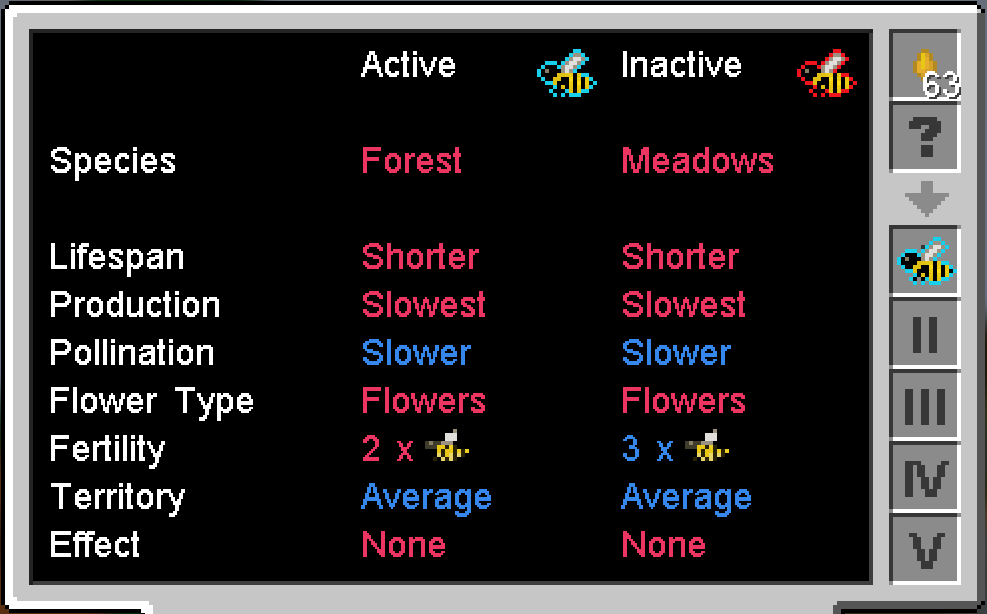
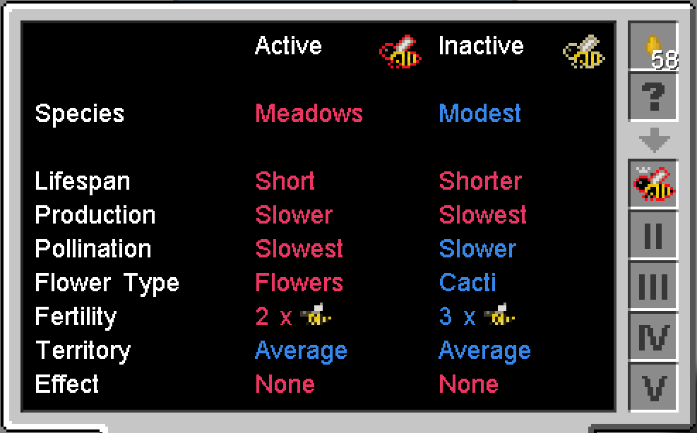
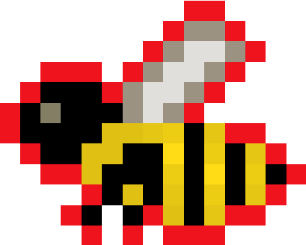
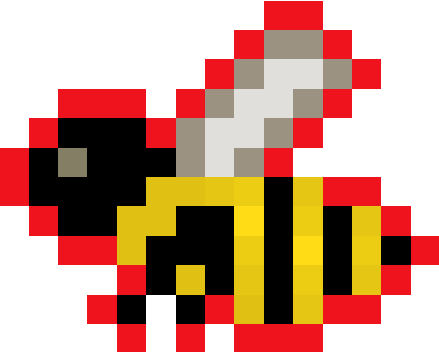
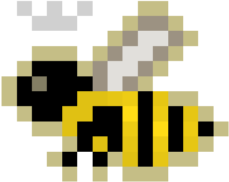
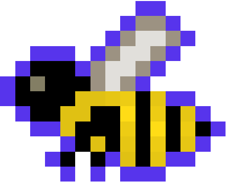

Introduction
So, you want to learn about bees? It can be a little intimidating at first, but it's actually quite easy to get started. The official Forestry site has a nice lore-flavored guide. The basic principles of Forestry will be covered here, but I'm really going to be focused more on Gendustry and Career Bees, two extension mods that build upon Forestry. The basic principles of Forestry will be covered, but Gendustry tends to take away a lot of the tedium (and surprises / challenges) of bee breeding, so ultimately it’s up to you how you want to do your bees!
This section is for people who are totally new to beekeeping in Forestry. If you've got the basic idea already, feel free to skip to using Gendustry or Career Bees. Also, this guide was written / tested with the Options modpack, but the guide should pretty much be applicable to any pack with these mods.
Why bees?
It’s a little different than your usual progression route. Forestry and Extra Bees give you resources, but unless you set up quite a few / go deep in with progression, you probably won’t be amazed by the rate of production, though you can target which resources you want by breeding just those bees. Also, it won’t compare at all to a mob farm / resource miner.
On the upside, Career Bees gives bees a bit more leverage in a world dominated by tech mods. They have buffs that stack with other enchantments, repairing, can automate smelting/crushing, create RF, set up mining bees, farm livestock, and even accelerate other machines. Also, they're much more cost efficient, consume little power, and easy to scale for larger setups.
What do you need to get started?
If you’re in the early game, all you need is some wood and a bit of wool to make a scoop. An early diamond and a bit of copper/tin will let you have the basics. However, if you can afford to start going into Gendustry from the start, you’ll need a decent amount of resources (tin, copper, diamonds, redstone and glass, as well as a healthy supply of RF(FE)) but it will take all the guesswork out of the process. Also, you’ll want some vanilla flowers (poppies, dandelions, blue orchids, etc.) nearby to do your breeding.
Biome Considerations
While not absolutely necessary, you may want to consider your environment before you start setting up your bee breeding area. Most bees, particularly
the ones from Career Bees, prefer normal / moderate climates, like those found in Plains, Forests, or Rivers (or modded ones with these characteristics).
If you don't have access to one, there are ways around it, but it will be a bit more challenging / costly to do. For example, a Mengelin biome is considered
cold, so bees preferring normal temperatures will refuse to work until they are placed in a warmer environment.
- Industrial Apiaries with Biome Upgrades
- This is the easiest fix since the environment in the apiary will simply be transformed into one the bee likes. You can remove it when it's not needed.
- Modifying the bee with Gendustry or Binnie's Genetics
- This option isn't really feasible if you're just starting out, but it's a nice permanent fix that is passed on to the bee's descendants.
- Breeding more tolerant bees manually
- This takes a lot more time and patience, but it would also be a permanent alteration.
Note that for the last two options, mutating bees in the Mutatron produces a standard bee of that type, so changes will be lost.
Your First Steps:
The first thing you’ll want to do is make a scoop. This is the only tool that can safely break a hive found in the wild, otherwise you’ll get nothing from breaking it. It has a low amount of durability, so you may want to upgrade to the Scooporator MX200 Turbo (powered/repaired with RF) or carry around spares. Sometimes other modded items work, such as Buildcraft quarries, but for the most part, you’ll want a scoop.
You’ll also want a bag of sorts - Traveller’s Sack, satchel, ender pouch, etc. Princesses won’t stack, so your inventory will fill up quick. Also, bring a good amount of high-saturation food or healing - the intended route is to use a Smoker, which can be obtained in villages or by trading with an apiarist villager, but I find that it’s quicker for me to just take the health hit and heal up while travelling to my next hive.
Where to Find Hives:
Just go explore! The hives you want are going to have distinctive horizontal bands all around the hive. (See picture.) Note that the hives to hunt should be from Forestry or Extra Bees, and they all have the distinctive horizontal bands across the entire hive. Hives from other mods (ex. Pam’s Harvestcraft, Rustic, Animania) will not give you the bees you want for this! Most bees, including those from Career Bees, can only be obtained by breeding/mutating these basic bees. If you are still struggling or want some spoilers, click the button for a detailed list.
Forestry Bees:
- Meadow Bees: Found in plains at ground level.
- Forest Bees: Found in forest underneath trees. They can also spawn in modded trees.
- Modest Bees: Found in deserts and savannahs, also at ground level.
- Marshy Bees: Found in swamplands, on the ground.
- Jungle Bees: Found in jungles, underneath trees.
- Wintry Bees: Found in snowy biomes, extreme hills, taigas.
- Ender Bees: Found on the surfaces of the End, both on the main and outer islands.
- Valiant Bees: Found randomly when breaking any hive.
- Steadfast Bees: Found in dungeon loot chests.
- Monastic Bees: Obtained by trading with an Apiarist villager.
These are technically not base forestry bees, but you will probably encounter them in your exploring. If going directly to Career Bees, you probably won’t need them for your breeding, but you may want to collect them anyways.
Extra Bees (Binnie's Bees)
- Rocky Bees: Found underground. May encounter while caving, if you see little bee particles around, though they can also spawn encased in stone.
- Water Bees: These are found underwater. Easiest to spot them when they happen to spawn in 1-block deep water, though they can spawn on the ocean floor.
- Marble Bees: These seem to be found around Quark marble deposits.
- Embittered Bees: These are found in the nether, supposedly around nether fortresses, though from my own (Creative Mode) searching, I didn't see a correlation. It seemed that they could spawn at any height, even in the surface under the lava level, and in modded biomes.
I still can’t find any hives!
There’s a good chance other people may have been in the area you’ve been searching. Gliding or flying is helpful. Hives give off some light, so if you’re having trouble spotting them, you may have better results at nighttime. You can also try other dimensions, as by default they can spawn in Aroma’s Mining Dimension, Lost Cities Dimension, ones created via RFTools / Mystcraft, etc.
Breaking the Hives
When you break a hive with the scoop, you’ll always get a princess, and sometimes a drone and/or honeycomb. You will also take roughly 4 hearts of health damage, unaffected by armor. The princess is the most important loot from the hives - they come in two varieties, “pristine” and “ignoble”, which only really matters when trying to do force various mutations on them via Gendustry.
- Princess (Pristine): The best kind of bee. Will not die to natural causes or genetic experimentation
- Princess (Ignoble): Also important, though not as great as their pristine sisters. These have a chance to die every life cycle; also has a chance of getting killed if operated on by various Gendustry machines. Note that while it has a chance of dying every life cycle, many times they’ll live through several real world days of constant breeding without dying out, so don’t be too worried. Also, if using a gendustry apiary, there are upgrades to prevent this type of routine death.
- Drone: A male bee, relatively disposable. You’ll need some to breed with a princess, but depending on the genes, you may end up with many more drones from one princess. A drone is consumed when bred with a princess. These are only used for breeding and dissolving for various machines.
- Queen: What you get when you put a male and female bee together. This is the stage where bee effects will happen, trees will get pollinated, etc. When its lifecycle is complete and it dies, the effects end, and a new princess and drone(s) will appear in the apiary as a result. You will never get a Queen out in the wild, though sometimes you may find them in villages.
Note that the only way to get pristine bees is by chance, when breaking a wild hive. Some species will always be pristine. Ignoble ones can be artificially created via Gendustry. Other mods may offer different options as well!
When you get home with bees, you’ll want at least one apiary - the one you choose depends on how much you can afford right now:
- Bee House: The starter housing, cannot do mutations and cannot be automated. Cheapest to make, or can be found in villages. Not recommended unless you can’t afford anything else.
- Apiary: The basic housing from Forestry. Can be automated with pipes.
- Industrial Apiary: From Gendustry, easily automatable and can be configured with upgrades as needed. Requires RF.
- Alveary: Multiblock advanced apiary from Forestry.
Make the Industrial Apiary if you can afford it. You don’t need to worry about the upgrades from the start, and depending on where you’re setting up your bees, you may not even need them at all. The other housing units are from Forestry, and you can use Frames to affect your bees, but these will gradually be consumed over time. For the most part I’ll be using the term “apiary” in a generic sense, but assuming you’ll be making the Industrial Apiary eventually.
Where do I put it?
Place the apiary outside, with a clear view of the sky. Make sure there are no leaves blocking the path to the sky, though glass is fine. At least one flower should be nearby. Eventually there will be bees that have… unpleasant effects, and you may want a safer area to place them, but only jungle bees will have this problem from the start. You may want a variety of vanilla / Forestry trees around, as the bees will gradually pollinate and create butterflies and new saplings, but it's really not necessary and is a whole different field to study.
To get started, you would put the princess (top) and a drone (bottom) in an apiary. The bees will also require a flower nearby - most of the time a vanilla flower will do. Since we're just starting out, I suggest putting in a Forest Princess and a Meadows Drone.
After inserting the bees into an apiary, hopefully you’ll see a little progress bar, after which the princess and drone disappear, replaced by a queen bee. If all is well, then there will be little bees emanating from the apiary, and possibly other effects depending on the bee. In the apiary’s gui, you’ll see a little icon in the upper right hand corner indicating the status. You can hover over that icon for more details. Forestry Apiaries will have a little biome image with temperature and humidity information, while Industrial Apiaries will have a green checkmark that will tell you how much energy the apiary is drawing.
Nothing is happening!
This is not unusual! When you open up the apiary’s gui, look in the upper right hand corner, and it will tell you what’s wrong. If you're using the Industrial Apiary, you can simply make an upgrade to fix most of the problems.
- Not Daytime/Nighttime:
- Many bees only operate in the daytime, and the lifecycle is simply paused when it is night.
- Too Hot/Too Cold/Too Wet/Too Dry:
- The bee doesn’t like the climate you’re trying to breed it in. This can be fixed by relocating the apiary to a suitable biome, adding upgrades to your Industrial Apiary, or modifying the bee to have a different temperature/humidity tolerance. It may have tolerated the biome previously, but sometimes introducing different tolerances can cause them to reject the climate entirely.
- Can’t see the sky:
- Most bees only operate in full view of the open sky (glass is okay, but not leaves). A few species will be comfortable underground or on the surface.
- Raining:
- Most bees don’t like the rain / snow by default.
- Flowers missing:
- Bees need a “flower” nearby to work. Note that some bees require something other than your standard flower (but the warning message will still call it a flower). For example, Jungle Bees require vines to operate, Sinister Bees need Nether Wort, etc. This trait can change with breeding as well! Note that if you do add a flower, sometimes it takes a minute for the bees to recognize that it is there. I’ve sometimes broken and re-placed Industrial Apiaries, which seems to help speed it up, but I’m not sure if it’s really a fix.
- No queen/No drone:
- You’re missing one of the two required bees on the left hand side to begin breeding. Having a princess and drone in the right-hand side (results) doesn’t count! (Industrial Apiaries will show this error; Forestry ones simply won’t work.)
- No inventory space:
- You’ve been using this apiary awhile and the right-hand inventory is full. Simply remove some of the items from the right hand side, and the apiary will resume operations. (Industrial Apiaries will show this error; Forestry ones simply won’t work.)
- Not enough power:
- Your apiary isn’t receiving enough power. Note that each upgrade increases the power the apiary uses per tick. You can see how much is needed by hovering over the icon in the upper right hand side.
So how does breeding work?
Remember Mendelian genetics? Bees operate on the same principle, with one gene "active" and the other "inactive". So if you see the following image...
This is the view of a bee when you use a Portable Analyzer. The one above has identical genes in both the active and inactive categories - it's basically what you get when you get a princess fresh from a hive. Now compare it to the one below:
This one has mixed genes in the active and inactive categories, because this is the result of a cross between a Forest bee and a Meadows bee. For mutation / effect purposes, only the traits in the "Active" category count.

This bee is a cross between a Modest princess and a Meadows drone, which had to be bred in desert temperatures.. The result is very mixed, but for breeding/mutating purposes, this is a Meadows Princess now and it will only work in a plains biome (or at least, lower temperature). The species of bee determines what kind of base biome/environment it prefers. However, the tolerances (in the second image) will let it be comfortable in slightly hotter or slightly colder climates. (The difference between Plains and Desert is +/- 2 though, this bee only has +/- 1 - which means it won't work in a desert without upgrades/modifications.)
Mutations
But wait! Certain bee combinations have the potential to mutate and turn into other species. Pairing up a Forest and Meadows has the potential (~15%) to produce the Common trait. So you might end up with a Forest-Meadows and a Common-Forest (or any similar combination) instead. Note that if you're using a Bee House, they will never mutate.
You can look up all the possible bee recipes ingame by looking up the bee you want, and then seeing how it's created via the Mutatron recipes or looking them up online.
If you'd like, you can progress through the bees the intended way, and some of the bees will have certain quirks, like the hive needs to
be placed on a particular ore, the breeding needs to take place in a particular biome, or explosions are required. However, if you’re lazy in a
hurry to get to the good stuff, you’ll want to use Gendustry to speed things along.
Which bees should I breed first?
Generally, you’ll want to do the main Forestry breeding path:
hive bees)
 

These bees tend to be used in various mutations, even with Career Bees. Another important (Forestry) path would be:

Finally, don’t forget to make hell bees (Sinister Bees). These also are commonly used in various mutations!
(in Nether / Mutatron)  
Effects
So, bees can have effects, which only become active while they are breeding (a Queen). Most of them are pretty good - the whole point of Career Bees is to get their awesome, mostly helpful effects. Many are mostly benign, like the heroic or beatific effect, and there are many bees with none at all. Some of them, as found mostly in Forestry or Extra Bees, can be negative.
If you're just going into this just for Career Bees - great! Nothing to worry about. Pretty much all the bees except for maybe one will have no harmful effects at all. The actual effects are listed in the Career Bees section and on the Career Bees Curseforge site.
This warning is more for Forestry/Extra bees - some effects can be harmful and/or world-destroying. Examining the bee with a Portable Analyzer will tell you the name and give you a pretty good idea of whether it is harmful or not. There are too many effects to really go over, but many are pretty similar, particularly among branches of bees. I suggest simply experimenting for fun, but if you’re really concerned, you can look up the effects here or by googling the bee in question. A distant corner of land is usually sufficient; you can make Apiarist’s armor to protect yourself from harmful effects. I only mention this because you may go into different types of non-Career-Bees to get different traits, which may lead to experiencing various effects.
Forestry Machines:
There are two machines you may want to make from Forestry: the Carpenter and the Centrifuge. The Carpenter will let you craft the Portable Analyzer, and the Centrifuge will let you process the honeycombs into honey drops and other miscellaneous loot. The Portable Analyzer requires a drop of honey each use, so you'll want to keep processing those honeycombs if you use the analyzer a lot. You can re-scan a bee you've already scanned at no cost, however. These aren't as necessary if you're strictly using Gendustry and not doing any manual breeding, since you will have the ability to choose your mutations easily. However, it's very helpful if you forget what traits a particular bee has, or can't figure out what kind of flowers it wants.
If you are working without Gendustry, you also will want a Squeezer to create seed oil from seeds, which is needed to make treated wood, Apiaries, etc. This also accepts modded seeds, such as those from Pam's Harvestcraft and Actually Additions's Canola Seeds. If you are without RF, you can power these machines using a Clockwork Engine, which is basically a manual crank.
Automation:
Forestry apiaries can be automated by extracting from the sides and re-inserting princesses / drones through the top. The machines should all allow pipe connections as well. Gendustry machines and apiaries can also be automated with any mod’s pipes, but you can also use Covers to insert/extract/detect errors.